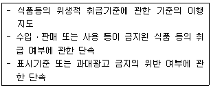
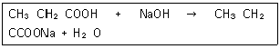
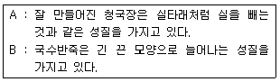
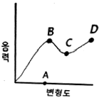
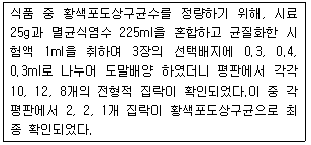
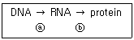
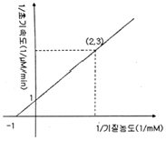

식품기사 (2017-08-26 기출문제)
1과목: 식품위생학
1. 주요증상으로서 호흡 곤란,연하 곤란,복시,실성 등의 현상이 일어나고 그 잠복기가 보통 12~18시간인 것은?
- Salmonella 식중독
- 포도상구균 식중독
- Botulinus균 식중독
- Welchii균 식중독
(정답률: 68%)

2. 감기는 짧으나 젖소가 방사능 강하물에 오염된 사료를 섭취할 경우 쉽게 흡수되어 우유에서 바로 검출되므로 우유를 마실 때 문제가 될 수 있는 방사성 물질은?
- 89Sr
- 90Sr
- 137Cs
- 131I
(정답률: 80%)
3. 저온유통이 식품의 품질에 미치는 영향이 아닌것은?
- 산화반응속도 저하
- 효소반응속도 저하
- 미생물번식 억제
- 식중독균 사멸
(정답률: 91%)
4. 액체 식품의 장기 저장 용도로 적합하지 않은 용기는?
- PE, 종이 라미네이트 지붕형
- PE, Al, 종이 라미네이트 지붕형
- 백인 카톤형
- 벽돌형
(정답률: 58%)
5. 옹기류에서 용출될 수 있으며 식품을 오염시킴으로서 인체에 축적되어 만성중독을 일으키는 물질은?
- Pb
- Cd
- Hg
- Fe
(정답률: 77%)
6. 식품 및 축산물 안전관리인증기준에 의거하여 식품(식품첨가물 포함)제조ㆍ가공업소,건강기능 식품제조업소,집단급식소식품판매업소,축산물 작업장ㆍ업소의 선행요건 관리 대상이 아닌 것은?
- 용수 관리
- 차단방역관리
- 회수 프로그램 관리
- 검사관리
(정답률: 53%)
7. 품위생법령에 의거하여 다음과 같은 직무를 수행하는 사람은?

- 식품위생감시원
- 소비자식품위생감시원
- 자율지도원
- 식품위생심의위원
(정답률: 89%)
8. 아래의 반응식에 의한 제조방법으로 만들어지는 식품첨가물명과 주요 용도를 옳게 나열한 것은?

- 카르복시메틸셀룰로오스 나트륨 - 증점제
- 스테아릴젖산나트륨- 유화제
- 차아염소산나트륨- 합성살균제
- 프로피온산나트륨- 보존료
(정답률: 73%)
9. 열조리된 근육식품에서 관찰되는 유해물질로서 아미노산, 크레아틴 등이 결합해서 생성되는 물질은?
- Polycyclic aromatic hydrocarbon
- Ehylcarbamate
- Heterocyclic amine
- Nitrosamine
(정답률: 54%)
10. 식품 내에 존재하는 미생물에 대한 설명으로 틀린 것은?
- 곰팡이는 일반적으로 세균보다 나중에 번식한다.
- 수분활성도가 높은 식품에는 세균이 잘 번식한다.
- 수분활성도 0.8이하의 식품에서는 거의 모든 미생물의 생육이 저지된다.
- 당을 함유하는 산성식품에는 유산균이 잘 번식한다.
(정답률: 82%)
11. 유기인제 농약에 의한 중독기작은?
- Cytochrome oxidase 저해
- ATPase 저해
- Cholinesterase 저해
- FAD oxidase 저해
(정답률: 68%)
12. 아니사키스란 어디에 기생하는 기생충인가?
- 담수어
- 해산어
- 일반가축
- 채소류
(정답률: 81%)
13. 장출혈성대장균의 특징 및 예방법에 대한 설명으로 틀린 것은?
- 오염된 식품 이외에 동물 또는 감염된 사람과의 접촉 등을 통하여 전파될 수 있다.
- 74℃에서 1분 이상 가열하여도 사멸되지 않는 고열에 강한 변종이다.
- 신선채소류는 염소계소독제 100ppm으로 소독 후 3회 이상 세척하여 예방한다.
- 치료 시 항생제를 사용할 경우, 장출혈성대장균이 죽으면서 독소를 분비하여 요독증후군을 악화시킬 수 있다.
(정답률: 72%)
14. 식품첨가물과 관련된 설명으로 적합하지 않은 것은?
- 사용목적에 따른 효과를 소량으로도 충분히 나타낼 수 있는 첨가물질
- 저장성을 향상시킬 목적의 의도적 첨가물질
- 식욕증진 목적의 첨가물질
- 포장의 적응성을 높일 목적으로 식품에 첨가하는 물질
(정답률: 74%)
15. 식품을 통해 감염될 수 있는 virus성 감염병은?
- 콜레라
- 장티푸스
- 유행성간염
- 이질
(정답률: 68%)
16. 생활폐수 오염지표의 일반적인 검사 항목이 아닌 것은?
- TSP(Total Suspended Particles)
- SS(Suspended Solids)
- DO(Dissolved Oxygen)
- BOD(Biological Oxygen Demand)
(정답률: 76%)
17. 다음 중 가장 잔존성이 큰 염소제 농약은?
- Aldrin
- DDT
- Telodrin
- γ-BHC
(정답률: 90%)
18. 방사선 조사식품과 관련된 설명으로 틀린 것은?
- 방사선 조사량은 Gy로 표시하며, 1Gy = 1J/kg 이다.
- 사용 방사선의 선원 및 선종은 60Co의 감마선이다.
- 식품의 발아억제,숙도조절 등의 효과가 있다.
- 조사식품을 원료로 사용한 경우는 제조 가공한 후 다시 조사하여야 한다.
(정답률: 90%)
19. 식품의 변질에 대한 설명으로 틀린 것은?
- 변패 : 미생물 및 효소 등에 의하여 탄수화물,지방질 및 단백질이 분해되어 산미를 형성하는 현상
- 부패 : 단백질과 질소화합물을 함유한식품이 자가소화, 부패세균의 효소작용으로 의해 분해 되는 현상
- 산패 : 지방질이 생화학적 요인 또는 산소, 햇볕, 금속 등의 화학적 요인으로 인하여 산화ㆍ변질되는 현상
- 갈변 : 효소적 또는 비효소적 요인에 의하여 식품이 산화ㆍ갈색화되는 현상
(정답률: 84%)
20. 식품의 색을 안정화시키거나 유지 또는 강화시키는 식품첨가물은?
- 착색료
- 안정제
- 표백제
- 발색제
(정답률: 71%)
2과목: 식품화학
21. 콩에 함유된 특성성분이 아닌 것은?
- 이소플라본
- 레시틴
- 라피노오스
- 쿠어세틴
(정답률: 70%)
22. 부제탄소원자를 가지지 않아 2개의 광학이성체가 존재하지 않는 중성아미노산은?
- Isoleucine
- Threonine
- Glycine
- Serine
(정답률: 72%)
23. 다음 중 비효소적 갈변반응이 아닌 것은?
- 마이얄 반응
- 캐러멜화 반응
- 비타민 C 산화에 의한 갈변반응
- 티로시나아제에 의한 갈변반응
(정답률: 73%)
24. 단백질의 열변성에 영향을 주는 요인으로 거리가 먼 것은?
- 수분
- 표면장력
- 전해질
- pH
(정답률: 85%)
25. KMnO4를 이용한 수산정량,칼륨 정량 등의 실험에 적용되는 실험방법은?
- 산화환원적정법
- 침전적정법
- 중화적정법
- 요오드적정법
(정답률: 70%)
26. 콩과류나 지방 식품이 저장 또는 유통 중 변화하여 생성되는 성분으로 이 성분이 많이 검출되면 변질(산패)이 되었다고 의심할 수 있는 성분은?
- 아세트알데히드
- 바닐린
- 헥사날
- 프로필 아릴다이설파이드
(정답률: 54%)
27. 아래의 두 성질을 각각 무엇이라 하는가?

- A: 예사성, B: 신전성
- A: 신전성, B: 소성
- A: 예사성, B: 소성
- A: 신전성, B: 탄성
(정답률: 79%)
28. 다음의 그림에서 항복점(yield point)은 어느 것인가?

- A
- B
- C
- D
(정답률: 71%)
29. 관능검사의 차이식별검사방법 중 종합적 차이검사에 해당하는 방법은?
- 삼점검사
- 다중비교검사
- 순위법
- 평점법
(정답률: 83%)
30. Amylose와 Amylopectin의 설명 중 틀린 것은?
- Amylose의 요오드반응은 청색이나 amylopectin은 적자색이다.
- Amylose는 요오드 분자와 내포화합물을 형성하나 amylopectin은 요오드 분자와 내포화합물을 형성하지 않는다.
- 중합도는 일반적으로 amylopectin이 amylose보다 크다.
- Amylose는 수용액에서 안정하나 amylopectin은 노화되기 쉽다.
(정답률: 71%)
31. 관능검사법의 장소에 따른 분류 중 이동수레를 활용하여 소비자 기호도 검사를 수행하는 방법은?
- 중심지역 검사
- 실험실 검사
- 가정사용 검사
- 직장사용 검사
(정답률: 83%)
32. 표고버섯의 주요한 향기성분은?
- Methyl cinnamate
- Lanthionine
- Sedanolide
- Capsaicine
(정답률: 65%)
33. 단백질이 변성되면 나타나는 일반적인 특성 변화로 옳은 것은?
- 소화 분해력 감소
- 친수성 증가
- 용해도의 감소
- 반응성 감소
(정답률: 58%)
34. 매운맛 성분과 주요 출처의 연결이 틀린 것은?
- 피페린-후추
- 차비신-산초
- 진제론-생강
- 이소티오시아네이트-겨자
(정답률: 67%)
35. 클로로필을 알칼리로 처리하였더니 피톨이 유리되고 용액의 색깔이 청록색으로 변했다. 다음 중 어느 것이 형성된 것인가?
- Pheophytin
- Pheophorbide
- Chlorophyllide
- Chlorophylline
(정답률: 75%)
36. 다음 화합물 중 산패가 가장 잘 일어나는 것은?
- 스테아르산
- 올레산
- 라우르산
- 리놀렌산
(정답률: 73%)
37. 유지의 중성지질에 붙어 있는 지방산을 가스크로마토그래피(GC)를 활용하여 분석할 때 유지의 처리 방법은?
- 중성지질을 아세톤 용매에 희석한 후 바로 주사기를 이용하여 GC에 주입한다.
- 중성지질을 비누화하여 유리지방산을 제거한 후 GC에 주입한다.
- 중성지질에 직접 에틸기를 붙여 GC에 주입한다.
- 중성지질을 지방산메틸에스터로유도체화시킨 후 GC에 주입한다.
(정답률: 72%)
38. 복합단백질 중 casein은 어디로 분류되는가?
- 당단백질
- 인단백질
- 지단백질
- 구상단백질
(정답률: 65%)
39. 효소적 갈변반응과 거리가 먼 것은?
- 멜라노이딘을 형성함
- Polyphenol oxidase, tyrosinase 등이 관계함
- 주로 과일이나 채소 등의 식품에 절단된 부위에서 일어남
- 구리이온은 갈변효소 작용을 활성화함
(정답률: 66%)
40. 단백질의 겔 강도에 영향을 미치는 요소 중 그 정도가 가장 작은 것은?
- 단백질의 침강계수와 확산속도
- 단백질 그물망구조에서의 가교결합수
- 단백질의 분자량
- 단백질의 3차구조 표면의 카르복실기 수와 염의 농도
(정답률: 55%)
3과목: 식품가공학
41. 다음 훈제품 제조법 중 가장 실용성이 적은 방법은?
- 냉훈법
- 온훈법
- 전훈법
- 액훈법
(정답률: 58%)
42. 어떤 공정에서 F121>℃ = 1min 이라고 한다.이 공정을 101℃에서 실시하면 몇 분간 살균하여야 하는가? (단,z=10℃로 한다.)
- 10분
- 18분
- 100분
- 118분
(정답률: 62%)
43. 지름 4cm인 관을 통해서 1.5kg/s의 속도로 20℃의 물을 펌프로 이송하는 경우 평균 유속은 얼마인가? (단,물의 밀도는 998.2kg/m3으로 한다.)
- 0.0955 m/s
- 0.195 m/s
- 1.195 m/s
- 2.195 m/s
(정답률: 46%)
44. 유지의 항산화제로 이용되는 비타민은?
- 비타민 A
- 비타민 E
- 비타민 D
- 비타민 F
(정답률: 79%)
45. 일정한 경도의 반죽에 대한 신장도와 인장항력을측정기록하여 반죽의 시간적 변화와 성질을 판정하는 기기는?
- Farinograph
- Extensograph
- Amylograph
- Mixograph
(정답률: 78%)
46. 염장 간고등어의 저장 원리는?
- 삼투압
- 건조
- 진공
- 훈연
(정답률: 89%)
47. 고기의 해동강직에 대한 설명으로 틀린 것은?
- 골격으로부터 분리되어 자유수축이 가능한 근육은 60 ~ 80%까지의 수축을 보인다.
- 가죽처럼 질기고 다즙성이 떨어지는 저품질의 고기를 얻게 된다.
- 해동강직을 방지하기 위해서는 사후강직이 완료된 후에 냉동해야 한다.
- 냉동 및 해동에 의하여 고기의 단백질과 칼슘결합력이 높아져서 근육수축을 촉진하기 때문에 발생한다.
(정답률: 62%)
48. 유지 채취 시 전처리 방법이 아닌 것은?
- 정선
- 탈각
- 파쇄
- 추출
(정답률: 64%)
49. Glucono-δ-lacton이 연제품의 pH를 낮추는데 이용되는 주요 원리는?
- 알칼리 금속과 반응하여 착염을 만든다.
- 다른 배합품과 반응하여 산성화 시킨다.
- 산으로 작용한다.
- 물에 용해하면 가수분해되어 산성이 된다.
(정답률: 63%)
50. 분무건조법의 특징과 거리가 먼 것은?
- 열변성하기 쉬운 물질도 용이하게 건조가능하다.
- 제품형상을 구형의 다공질 입자로 할 수 있다..
- 연속으로 대량 처리가 가능하다.
- 재료의 열을 빼앗아 승화시켜 건조한다.
(정답률: 63%)
51. D값, F값, Z값에 대한 설명 중 옳은 것은?
- D110℃=10 : 100℃에서 일정농도의 미생물을 완전히 사멸시키려면10분이 소요된다.
- F121℃=4.07 :식품을 121℃에서 가열하면 미생물이 처음균수의1/10로 줄어드는데 4.07분이 소요된다.
- Z=20℃ : D값을 1/10로 감소시키려면 살균온도를 20℃만큼 더 높여야 된다.
- D값, F값, Z값은 모두 시간을 나타낸다.
(정답률: 61%)
52. 곡물의 도정방법에서 건식도정과 습식도정 중 습식도정에만 해당되는 설명은?
- 겨와 배아가 배유로부터 분리된다.
- 곡물 중 함수량을 줄인 후 도정하는 것이다.
- 배유로부터 전분과 단백질을 분리할 목적으로 사용될 수 있다.
- 쌀,보리,옥수수에 사용한다.
(정답률: 69%)
53. 가염 코오지를 만드는 목적이 아닌 것은?
- 잡균 번식 방지
- 코오지균의 발육 정지
- 발열 방지
- 건조 방지
(정답률: 44%)
54. 어류의 지질에 대한 설명으로틀린 것은?
- 흰살 생선은 지방함량이 적어 맛이 담백하다.
- 어유에는 ω-3계열의 불포화지방산이 많다.
- 어유에는 혈전이나 동맥경화 예방효과가 있는 고도불포화 지방산이 많이 함유되어 있다.
- 어유에 있는 DHA와 EPA는 융점이 실온보다 높다.
(정답률: 77%)
55. 저지방우유의 유지방분 기준은?
- 원유의 유지방분을 0.6~2.6%로 조정
- 원유의 유지방분을 4% 이하로 조정
- 원유의 유지방분을 0.030~1.045%로 조정
- 원유의 유지방분을 1%미만으로 조정
(정답률: 57%)
56. 식초 제조에관여하는 반응은?
- C6H12O6 → 2C2H5OH + 2CO2
- C6H12O6 → C4H8O2 + 2CO2 + 2H2
- C6H12OH + O2 → CH3COOH + H2O
- C6H12O6 → 2C3H6O3
(정답률: 77%)
57. 열처리시 온도에 대한 민감성이 가장 큰 것은?
- Z값이 10℃인 포자
- Z값이 25℃인 효소
- Z값이 35℃인 비타민
- Z값이 50℃인 색소
(정답률: 67%)
58. 발효유에 사용되는 starter는?
- 고초균
- 유산균
- 장구균
- 황국균
(정답률: 79%)
59. 과일 주스 제조 시에 혼탁을 방지하기 위하여사용되는 효소는?
- Protease
- Amylase
- Pectinase
- Lipase
(정답률: 79%)
60. 과실을 주스로 가공할 때 주의점 및 특정에 대한 설명으로 틀린 것은?
- 색깔이 가공 중에 변하지 않게 한다.
- 살균은 고온살균이 적합하다.
- 비타민의 손실이 적도록 한다.
- 과일 중의 유기산은 금속 화합물을 잘 만들므로 용기의 금속재료에 주의한다.
(정답률: 80%)
4과목: 식품미생물학
61. 닫힌계 또는 회분계에서 미생물을 배양할 때 증식곡선 단계를 순서대로 나열한 것은?
- 유도기 - 대수기- 정지기 - 사멸기
- 정지기 - 대수기- 유도기 - 사멸기
- 대수기- 유도기 - 정지기 - 사멸기
- 대수기- 정지기 - 유도기 - 사멸기
(정답률: 85%)
62. 김치의 숙성에 관여하지 않는 미생물은?
- Lactobacillus platarum
- Pediococcus cerevisiae
- Enterococcus faecalis
- Staphylococcus aureus
(정답률: 63%)
63. 아래의 실험결과에 따른 황색포도상구균 정량 결과는?(오류 신고가 접수된 문제입니다. 반드시 정답과 해설을 확인하시기 바랍니다.)

- 80 CFU/g
- 240 CFU/g
- 250 CFU/g
- 300 CFU/g
(정답률: 55%)
64. 다음 발효 과정 중 제조공정에서 박테리오파아지에 의한 오염이 발생하지 않는 것은?
- 초산 발효
- 젖산 발효
- 아세톤 - 부탄올 발효
- 맥주 발효
(정답률: 62%)
65. 파아지의특성에 관한 설명 중 틀린 것은?
- 세균여과기를 통과한다.
- 발효생산에 이용되는 발효균의 용균 및 대사산물 생산 정지를 유발한다.
- 약품에 대한 저항력은 일반 세균보다 약하여 항생물질에 의해 쉽게 사멸된다.
- 유전물질로 DNA 또는 RNA를 가진다.
(정답률: 70%)
66. 효모의 분류 및 동정에 이용되는 특성이 아닌 것은?
- 포자형성 유무
- 라피노스 이용성
- 그람염색
- 피막형성 유무
(정답률: 68%)
67. 병족세포를 가지는 곰팡이 속은?
- Rhizopus 속
- Aspergillus 속
- Penicillium 속
- Monascus속
(정답률: 40%)
68. 종속영양균의 탄소원과 질소원의 이용에 관한 설명 중 옳은 것은?
- 탄소원과 질소원 모두 무기물만을 이용한다.
- 탄소원으로 무기물을,질소원으로 유기 또는 무기질소 화합물을이용한다.
- 탄소원으로 유기물을,질소원으로 유기 또는 무기질소 화합물을이용한다.
- 탄소원과 질소원 모두 유기물만을 이용한다.
(정답률: 70%)
69. 간장독인아플라톡신을 생산하는 곰팡이는?
- Aspergillus flavus
- Aspergillus oryzae
- Penicillium expansum
- Penicillium citrinum
(정답률: 78%)
70. 간장의 후숙에 관여하여 맛과 향기를 내는 내염성 효모의 세포 형태는?
- 위균사형
- 타원형
- 구형
- 레몬형
(정답률: 50%)
71. 미생물의 증식도 측정에관한 설명 중 틀린 것은?
- 총균계수법 측정에서 0.1% methylene blue로 염색하면 생균은 청색으로 나타난다.
- 곰팡이와 방선균의 증식도는 일반적으로 건조균체량으로 측정한다.
- Packed volume법은 일정한 조건으로 원심분리하여 얻은 침전된 균체의 용적을 측정하는 방법이다.
- 비탁법은세포현탁액에 의하여 산란된 광의 양을 전기적으로 측정하는 방법이다.
(정답률: 47%)
72. ATP를 소비하면서 저농도에서 고농도로 농도구배에 역행하여 용질부자를 수송하는 방법은?
- 단순 확산
- 촉진 확산
- 능동수송
- 세포 내 섭취작용
(정답률: 81%)
73. 돌연변이에 대한 설명 중 틀린 것은?
- 자연적으로 일어나는 자연돌연변이와 변이원처리에 의한 인공돌연변이가 있다.
- 돌연변이의 근본적인 원인은 DNA의 nucleotide배열의 변화이다.
- 염기배열 변화의 방법에는 염기첨가,염기결손,염기치환 등이 있다.
- Point mutation은 frame shift에 의한 변이에 비해 복귀돌연변이가 되기 어렵다.
(정답률: 67%)
74. 고구마 연부병을 유발하는 미생물은?
- Bacillus subtilis
- Aspergillus oryzae
- Saccharomyces cerevisiae
- Rhizopus nigricans
(정답률: 76%)
75. 비타민 B12를 생육인자로 요구하여 비타민 B12의 미생물적인 정량법에 이용되는 균주는?
- Staphylococcus aureus
- Bacillus cereus
- Lactobacillus leichmanii
- Escherichia coli
(정답률: 63%)
76. 아미노산으로부터 아민을 생성하는데 관여하는 효소는?
- Amino acid decarboxylase
- Amino acid oxidase
- Aminotransferase
- Aldolase
(정답률: 65%)
77. 김치 발효 초기에 주로 생육하여 젖산을 생산함으로써 일반 세균의 증식을 억제하는 젖산균은?
- Leuconostocmesenteroides
- Enterococcus faecalis
- Lactobacillus plantarum
- Saccharomyces cerevisiae
(정답률: 69%)
78. 완전히 탈기 밀봉된 통조림 식품에서 생육할 수 있는 변패세균의 종류는?
- 미호기성균
- 혐기성균
- 편성 호기성균
- 호냉성균
(정답률: 81%)
79. Aspergillus oryzae에 대한 설명으로 적합하지 않은 것은?
- Pectinase를 강하게 생산하여 과실주스의 청징에 이용된다.
- 간장,된장 등의 제조에 이용된다.
- 대사산물로 kojic acid를 생성한다.
- 효소환성이 강해 소화제 생산에 이용된다.
(정답률: 62%)
80. 고온균에 관한 설명으로 적합하지 않은 것은?
- 세포막 중 불포화지방산 함량이 높아서 열에 안정하다.
- 세포 내의 효소가 내열성을 지니고 있어 고온에서 증식할 수 있다.
- 발효 중인 퇴비더미의 미생물은 대부분 고온균에 속한다.
- 고온균의 최적 생육온도는 50~60℃이다.
(정답률: 58%)
5과목: 생화학 및 발효학
81. 미생물 직접발효법으로 생산하는 아미노산이 아닌 것은?
- L-cystine
- L-glutamic acid
- L-valine
- L-tryptophan
(정답률: 45%)
82. 맥아즙 자비의 목적이 아닌 것은?
- 맥아즙의 살균
- 단백질의 침전
- 효소작용의 정지
- pH의 상승
(정답률: 51%)
83. 포도주 발효 시 아황산을 첨가하는 이유가 아닌 것은?(오류 신고가 접수된 문제입니다. 반드시 정답과 해설을 확인하시기 바랍니다.)
- 포도주의 산화방지
- 단백질의 혼탁방지
- 구연산 발효의 억제
- 유해균의 증식억제
(정답률: 44%)
84. 당질원료의 발효성을 갖지 않는효모는?
- Schizosaccharomyces속
- Rhodotorula속
- Saccharomyces 속
- Torulopsis 속
(정답률: 46%)
85. 유전정보전달의 단계에서 a, b에 해당하는 내내용으로 옳은 것은?

- ⓐ복제 ⓑ번역
- ⓐ전사 ⓑ복제
- ⓐ번역 ⓑ전사
- ⓐ전사 ⓑ번역
(정답률: 73%)
86. 미생물의 발효배양을 위하여 필요로 하는 배지의 일반적인 성분이 아닌 것은?
- 질소원
- 무기염
- 탄소원
- 수소이온
(정답률: 69%)
87. 액체배양법에 의한 효소생산에 대한 설명으로 옳은 것은?
- 기계화가 불가능하다.
- 액체배양법은 버섯재배,곰팡이 배양에 적합하다.
- 곰팡이의 고체배양법보다일반적으로 역가가 높다.
- 액체배양에는 정치배양,진탕배양,통기배양 등이 있다.
(정답률: 54%)
88. Vitamin B6군에 관한 설명으로 틀린 것은?
- 아미노기 전이반응에 관여하는 효소의 보결분자로 작용한다.
- Pyridoxine, pyridoxal 및 pyridoxamine 등이 서로 상호 전환되는 구조를 갖고 있다.
- Pyridoxal phosphate은 활성형으로 aminamgroup 공여체이다.
- 새로운 아미노산 생성 및 분해 과정에 관여한다.
(정답률: 47%)
89. DNA 분자의 화학적 구성요소와 뉴클레오티드단량체 간의 결합양식으로 옳은 것은?
- 질소염기;디옥시리보오스;인산다이에스테르결합
- 질소염기;리보오스;인산다이에스테르결합
- 질소염기;디옥시리보오스;아미드결합
- 질소염기;리보오스;아미드결합
(정답률: 75%)
90. Brevibacteriumammoniagenes의 adenine 요구주에 의한 IMP의 직접 발효생산에 대한 설명으로 틀린 것은?
- 배지 중에 adenine을 충분량 증가시키면 균의 생육량이 증가하면서 IMP의 양도 증가한다.
- Mn2+량이 충분량 있으면 생육량은 증가하지만 IMP의 축적량은 감소한다.
- Mn2+ 제한조건하에서는 균이 이상형태로 변화하여 세포막 투과성이 좋아진다.
- IMP 발효생산은 adenine과 Mn2+ 의 첨가량을 제한하는 조건하에서 가능하다.
(정답률: 38%)
91. 설탕,당밀,전분,전분 찌꺼기 또는 포도당을 원료로 하여 구연산을 제조할 때 사용되는 미생물은?
- Aspergillus niger
- Streptococcus lactis
- Rhizopus delemar
- Saccharomyces cerevisiae
(정답률: 63%)
92. 왓슨과 크릭이 주장한 DNA구조에 대한 설명설명 틀린 것은?
- Adenine과 Thymine은 수소결합이 2개이다.
- 각 사슬의 골격구조는 염기와 당으로 이루어져 있다.
- Nucleotide 간의 결합은 3', 5' phosphodiester결합으로 이루어져 있다.
- 염기쌍의 상보적인 수소결합은 purine계열 염기와 pyrimidine 계열 염기 사이에 이루어져 있다.
(정답률: 52%)
93. 고콜레스테롤혈증의 원인으로 옳은 것은?
- 콜레스테롤 전구체인 메발론산의 혈중농도가 낮기 때문이다.
- 세포표면의 수용체에서 혈중 LDL을 효과적으로 흡수하지 못하기 때문이다.
- 메발론산으로부터 혈중 HDL을 다량 생합성하기 때문이다.
- 콜레스테롤이 소량 함유된 식품을 섭취하기 때문이다.
(정답률: 64%)
94. 인간 체내에서 포도당 신생합성과정을 통해 포도당을 합성할 수 있는 비탄수화물 전구체가 아닌 것은?
- Glycerol
- Lactic acid
- Palmitic acid
- Serine
(정답률: 35%)
95. 혐기적 대사의 설명으로 틀린 것은?
- 산소를 최종전자수용체로 사용하지 않는다.
- 호기적 대사보다 ATP를 생성하는 능률이 높다.
- 유기중간체를 환원하여 산물을 만들고 CO2로의 완전산화는 하지않는다.
- 대표적인 것은 해당과정 및 각종 발효과정이다.
(정답률: 70%)
96. 그림은 효소의 초기(반응)속도와 기질 농도와의 관계를 표시한 것이다.이 효소의 반응속도의 Km과 Vmax값은?

- Km=1, Vmax=1
- Km=2, Vmax=2
- Km=1, Vmax=2
- Km=2, Vmax=1
(정답률: 60%)
97. 효소 저해반응 중 경쟁적 저해에 대한 설명으로 틀린 것은?
- 저해제가 있으면 효소의 반응 최대속도(Vmax)가 감소한다.
- 저해제가 존재할 경우 미카엘리스 상수(Km)은 증가한다.
- 기질과 모양이 유사하여 효소의 활성자리에 동일하게 작용하기 때문이다.
- 저해를 해소하기 위해서는 기질을 저해제보다 과량으로 넣어주면 된다.
(정답률: 47%)
98. 효모에 의한 알코올 발효에 있어서 Neuberg발효 제 3형식은?
- C6H12O6 → 2C2H5OH + 2CO2
- C6H12O6 → C3H5(OH)3 + CH3CHO + CO2
- C6H12O6 → CH3COCOOH + C3H5(OH)3
- 2C6H12O6 + H2O → 2C3H5(OH)3 + CH3COOH + C2H5OH + 2CO2
(정답률: 57%)
99. 발열반응과 흡열반응에서 엔탈피변화(△H)에 대한 설명으로 옳은 것은?
- 발열반응과 흡열반응의 △H는 모두 음이다.
- 발열반응과 흡열반응의 △H는 모두 양이다.
- 발열반응의 △H는 양의 값이고,흡열반응의 △H는 음의 값이다.
- 발열반응의 △H는 음의 값이고,흡열반응의 △H는 양의 값이다.
(정답률: 58%)
100. 탈탄산반응의 보조효소로 작용하는 thiamine pyrophosphate(TPP)의 작용활성 부위는?
- Thiazole ring
- Pyrrole ring
- Indole ring
- Imidazole ring
(정답률: 51%)